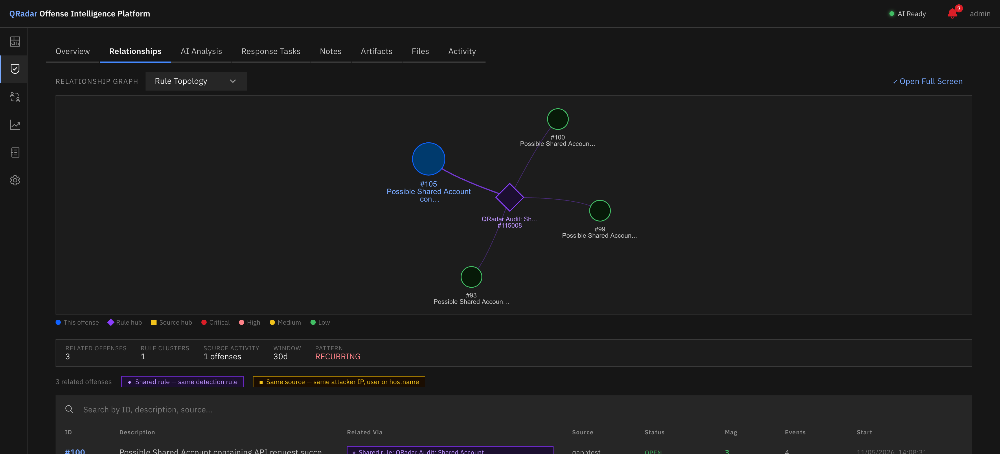
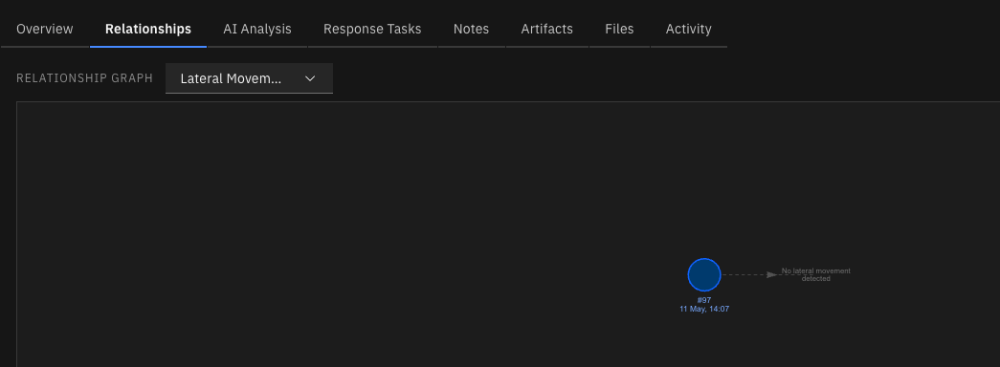

Relationship Graph¶
Overview¶
The Relationship Graph is an interactive network visualisation that shows how a specific offense relates to others in your environment. It answers the question: "What else should I be looking at while investigating this offense?"
Access it from any Offense Detail page by clicking View Connections (in the Historical Pattern strip).

Relationship Graph — Rule Topology lens. Purple diamonds are rule hubs; offense nodes color-coded by magnitude.Five Investigative Lenses¶
The graph offers five switchable lenses, each answering a different investigative question. You can switch lenses at any time using the View as dropdown in the top bar.
Rule Topology¶
Question: Which other offenses share the same detection rules?
Hub nodes (purple diamonds) represent QRadar detection rules. Offense nodes connect to the rule hubs they triggered. The hub size scales with the number of offenses that have triggered that rule — a large hub indicates a frequently-firing rule, which may signal either a high-activity threat actor or a candidate for rule tuning.
Source hubs (colored boxes) are also shown when the offense source has triggered multiple offenses. The color of the source hub indicates the source type: - Yellow — IP address - Green — Username - Teal — Custom Event Property (CEP)
Attacker Topology¶
Question: What else has this attacker done?
Groups related offenses by their offense source (attacker IP, username, or CEP). Each unique source gets its own hub node. If the attacker has been involved in multiple offenses, all of them are connected through their shared source hub — giving a complete picture of attacker activity in the environment.
Target Topology¶
Question: What other offenses targeted the same network?
Groups offenses by shared destination networks (from QRadar's network hierarchy). Useful for identifying whether a campaign is targeting a specific network segment, a VLAN, or a business unit's infrastructure.
Campaign Topology¶
Question: Which offenses share the same attack category and time window?
Groups offenses sharing the same QRadar event categories, weighted by temporal proximity. Edges include a time delta label (e.g. Δ2.3h) showing how close in time the offenses occurred. Campaign topology is strongest when offenses share categories and occurred within hours of each other.
Lateral Movement¶
Question: Is there a directed hop chain between these offenses?

Lateral Movement lens — directed timeline showing hop chain. Orange arrows indicate dest IP → source IP overlap.The only directed lens. Renders a left-to-right timeline showing offense nodes sorted by start time, with directed orange arrows between offenses where a lateral hop was detected — meaning the destination IPs of one offense's events overlap with the source IPs of the next offense.
This lens uses event-level data from the AI analysis pipeline and is available only for offenses that have been analyzed. Offenses without event data are shown as grey nodes with a no data indicator.
Info
The Lateral Movement lens uses a hierarchical left-to-right layout with physics disabled, rather than the force-directed layout used by other lenses.
Relationship Scoring¶
Graph data is pre-computed during AI analysis (Phase 5) and stored in the offense_relationships table. This means graph rendering is instant — no computation happens at query time.
Each offense pair is scored across five dimensions:
| Dimension | Weight | Signal |
|---|---|---|
| Shared detection rules | 35% | Rule ID intersection between the two offenses |
| Same attacker source | 30% | offense_source equality |
| Shared destination networks | 15% | destination_networks intersection |
| Shared categories + time proximity | 12% | Category intersection × time decay factor |
| Lateral movement | 8% | Destination IPs of A ∩ Source IPs of B |
The composite score ranges from 0.0 to 1.0. Only pairs with a score ≥ 0.15 are stored and displayed.
Time decay for campaign topology: full weight (1.0) if the offenses are within 6 hours of each other, linearly decaying to 0.0 at 24 hours apart.
Auto-Recommendation¶
When you open the graph, the backend analyses all stored relationships for the current offense and recommends the lens with the strongest signal. A blue notification banner appears:
Recommended: Attacker Topology
192.168.0.1links 34 offenses
Click Apply lens to switch to the recommended view, or dismiss the banner and choose manually.
Graph Controls¶
| Control | Action |
|---|---|
| Drag a node | Reposition it manually |
| Scroll / pinch | Zoom in / out |
| Click an offense node | Open the node detail panel (right side) |
| Click Reset Layout | Re-run physics simulation to re-settle the layout |
| View as dropdown | Switch between the five lenses |
Node detail panel¶
Clicking any offense node (not a hub) opens a panel showing:
- Offense ID and description
- Magnitude and relationship score tags
- Status and lifecycle stage
- Related via chips — color-coded tags showing exactly why the two offenses are related (e.g. Rule #114308, 192.168.0.1, Exploit/Malware)
- Open Offense → button to navigate to the full Offense Detail
Stats overlay¶
The bottom-left corner shows:
- Number of related offenses displayed
- Active lens name
- Time window
- A green ● scored dot if the data is from pre-computed relationship scoring
- RECURRING (red) or ISOLATED (green) indicator for the offense's historical pattern
Node Color Reference¶
Offense nodes are colored by magnitude:
| Color | Magnitude |
|---|---|
| Red | ≥ 8 (Critical) |
| Pink/Magenta | 6–7 (High) |
| Yellow | 4–5 (Medium) |
| Green | < 4 (Low) |
Hub nodes use fixed colors by type (rule = purple, source IP = yellow, network = teal, category = pink).
Related Offenses Table¶
Below the graph, the Related tab on Offense Detail shows the same related offenses as a searchable, sortable DataTable. Each row includes the offense description, magnitude, score, status, and the match reasons (same color-coded chips as the graph node panel). Use this view when you want to quickly scan a list rather than exploring the graph visually.